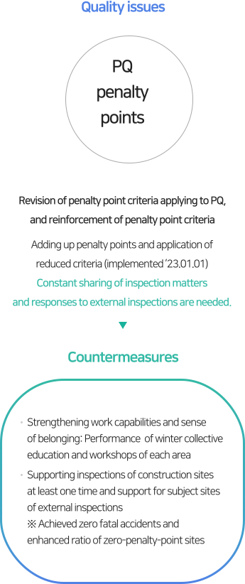
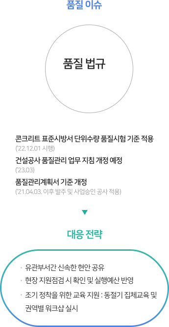
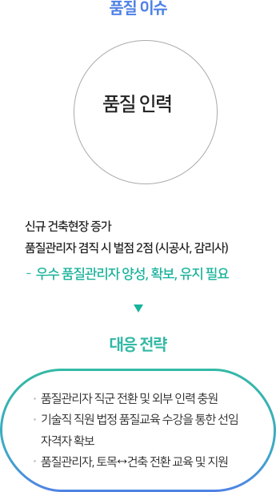

SUSTAINABILITY
Social
Management Coexistence
Management Sharing
Management Quality
Management Human Rights
Management Happiness of
Members
- Quality Management Guideline
-
As Dongbu Corporation is a “socially responsible premium company” that seeks to win the admiration of clients and provide profits and satisfaction to shareholders, to make ourselves a wholly sustainable construction company representing Korea, we practice quality management as follows
- Practice quality management complying with basic norms and principles.
- Ensure profitability through substantialization of risk management.
- Minimize loss through strict quality management.
- Strengthen work capabilities and achieve best quality.
2023.03.22
CEO of Dongbu Corporation
Objectives of Quality Management
- ZeroPenalty Points for Inadequacies
Efficient Quality Management
Detailed construction management complying with basic norms and principles- 01
- Establishment of Efficient Working System
- Establishment of efficient work criteria and continuous improvement
- Substantialization of information sharing process operation
- Activation of environmental communication
- 02
- Ensuring Basic Capabilities and Strengthening Professional Capabilities
- Providing continuous education to all employees
- Activating professional education course for quality mangers
- Strengthening supporting capabilities of persons in charge of headquarters
- 03
- Complying with Construction Quality Rules
- Substantialization of supporting inspections of headquarters
- Efficient self-inspections of sites
- Complying with operation criteria of revised quality management protocol
Quality Management System
- We listen to and reflect the opinions of clients to realize the satisfaction of clients.
-
- Operating S4C (Satisfaction for Customer) system
Client-based Value Creation
- We continue to improve quality through innovation activities.
-
- Progress of various innovation activities for improvement of product and work.
Continuous Quality Improvement
- We discover and support excellent partners to strengthen quality competitiveness.
-
- Guiding partners through technologies and operating incentive system for excellent partners
Co-existing Cooperation Relationship
Certification Status of Quality Management System
In order to arrange the best quality system complying with client’s requirements, and to establish a general quality assuring system, Dongbu Corporation obtained ISO 9001 standard in 1994 and has maintained it so far.
KS Q ISO 9001 : 2015
- Organization of certification
-
- TUV NORD KOREA Ltd
- Date of certification issue
-
- 2022.06.12
- Expiry date of certification
-
- 2025.06.11
- Range of certification
-
-
Civil engineering, constructions of buildings, houses,
plants (including chemical, power, environmental, industrial plants),
and firefighting facilities, electrical works, design and development
of telecommunication constructions, project management,
purchases, constructions, operations, and services
-
Civil engineering, constructions of buildings, houses,
Response to Quality Issue
In order to create client-based values through continuous quality improvement, Dongbu Corporation is putting in place and practicing countermeasures to address various quality issues.
- 
- 
- 
-
- Quality issues : PQ penalty points
- Revision of penalty point criteria applying to PQ, and reinforcement of penalty point criteria : Adding up penalty points and application of reduced criteria (implemented ’23.01.01) - Constant sharing of inspection matters and responses to external inspections are needed.
- Countermeasures
- Strengthening work capabilities and sense of belonging: Performance of winter collective education and workshops of each area
- Supporting inspections of construction sites at least one time and support for subject sites of external inspections ※ Achieved zero fatal accidents and enhanced ratio of zero-penalty-point sites
-
- Quality issues : Quality regulations
- Application of standard concrete specification to quality test criteria (Implemented ’22.12.01) : Schedule of a revision of quality management guidelines for constructions (’23.03) - Revision of criteria for quality management protocol (Applied to orders and approved constructions after ’21.04.03.)
- Countermeasures
- Rapid sharing of issues between relevant departments
- Identification in support inspections of sites and reflection in working budget
- Education support for quick settlement: Performance of winter collective education and workshops by areas
-
- Quality issues : Quality workforce
- Increase in new construction sites : 2 penalty points when quality manager holds multiple jobs (Constructor and supervisor) - Training, ensuring, and maintenance of excellent quality manager are needed.
- Countermeasures
- Job conversion to quality manager and addition of external workers
- Ensuring persons entitled to appointment by making technical workers take course about legal quality education
- Education and support for quality manager and conversion of civil engineering ↔ construction